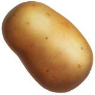
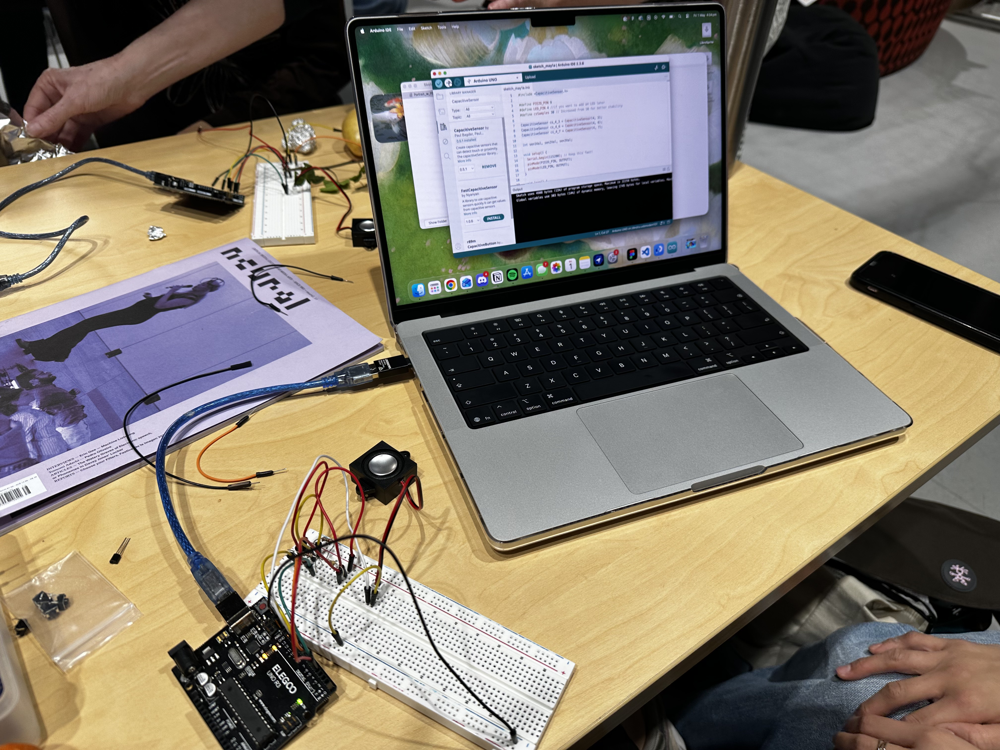
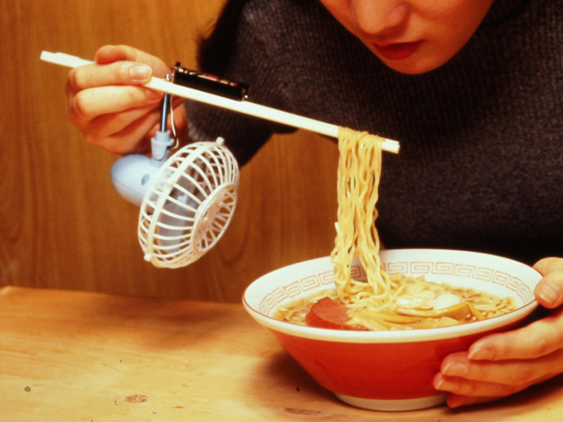

VEGGIE SEASON OH YEA! WE PLAYED WITH VEGGIES!! I hope they didn't go to waste tho.. if they did i hope they became fertalizer or something... I was lowk tempted to ask if I could bring them home cos if no one's eating it, i will!! I'm sure they ended up getting eaten though.. somehow.. somewhere
Did this before I knew what we were ultimately up for.

Lord I did not like this, I'm sorry but this took forever. We first used my laptop too which ended up being the main problem which is so pointed, cause I like to think my laptop's fine! Anyways. Thermin picture. Could also be because I've only got 8gb RAM and had like 5 windows open.. oopsies.
This was so fun, especially when we played with the pitches saw how to better use it with other objects (it was mainly potatoes, carrots and leaves hehe). Now hear my symphony.
everyday gadgets that sorta solve a problem but also sorta not

As you can see, its an apparatus that they've connected to a pair of chopsticks, with a fan hanging from it. Thanks to that, the noodles gets cooled. Lowkey love it. It's kinda camp